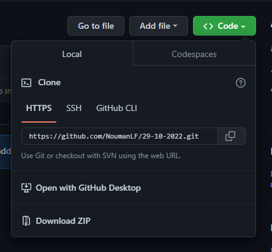

Creating A New Github Repository
Step-1
Click on New Button to create new Repository

Step-2
Give a Meaningful name to repository. Chooce public or private according to your need

Step-3
Click on Create Repository

Step-4
Run these command in your local folder After git init(functionality explain below) Command.

Clonning Any Repository
You can clone any repository in your local computer by using this link. You can also download the zip folder of this repository
Live your Repository through Github Pages
GitHub Pages is a static site hosting service that takes HTML, CSS, and JavaScript files straight from a repository on GitHub
- Go to Setting
- Go to Pages
- Select the branch
- And then Save